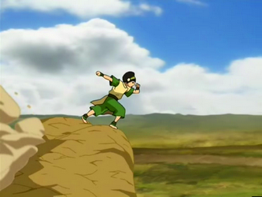
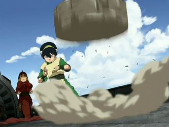
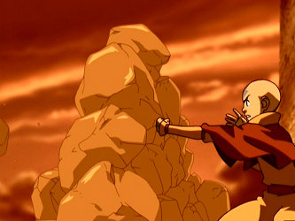

"Earth is the element of substance"
Earth is the element of substance, while the people of the Earth Kingdom are diverse, strong, and enduring.[1] Following the lion turtles' decision to relinquish their role as protectors of mankind, Oma and Shu were the first earthbenders to learn this art from the badgermoles.
The key to earthbending is utilizing neutral jing, which involves waiting and listening for the right moment to strike and, when that moment comes, acting decisively. In other words, earthbenders generally endure their enemies' attacks until the right opportunity to counterattack reveals itself.
Earthbending is one of the most diverse of the bending arts, ranging from the rigid and collectively learned earthbending of the Dai Li, which is the most commonly used earthbending style, to the individually taught styles, such as Toph's unique earthbending technique.
